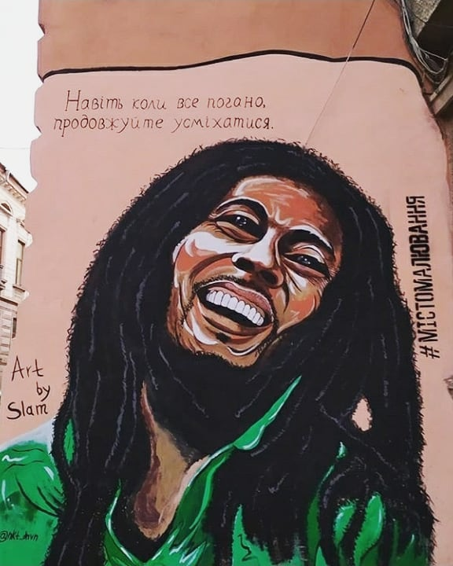

У Чернівцях художники розмальовують обшарпані фасади будинків муралами . Ідея перетворення старих фасадів на витвори мистецтва належить кільком чернівецьким волонтеркам. До проєкту "Місто малювання" долучилися близько двох десятків людей: художники, поети, письменники. Одним словом, активна молодь.
"Тематику малюнка художники обирають самі. Ми створили окремий чат і щовечора планували локації. Конкретних вимог до митців не ставили ніколи. Головне - це повинна бути обшарпана, так би мовити, занедбана стіна. Коли перші мурали були створені, ми зрозуміли, що нам потрібно якось називатися. Обирали з кількох варіантів. І, врешті, наш проєкт назвали "Академія містомалювання". Розповідає одна із засновниць проєкту - Тетяна Марценюк.
Розмальовувати стіни почали близько двох років: прогулюючись Чернівцями, помітили, що чимало фасадів розписані лайливими написами та малюнками. Закупили фарби, пензлі і так створили перший мурал. Зараз їх вже понад 40. Працюють художники безкоштовно. Єдине, кажуть, місцеві жителі часто пригощають гарячими напоями.
"Наші дівчата, чернівчанки, вирішили малювати в менших об'ємах. Особливо там, де стіни будинків знаходяться в занедбаному стані або на них нафарбовані нецензурні слова або реклама наркотиків. Вони створюють, як на мене, позитивний настрій, додають місту певні родзинки, які подобаються не тільки чернівчанам, але й туристам." Говорить мер Чернівців - Олексій Каспрук.
Першим муролом в Чернівцях стала «Заставнівська красуня» – дівчина у народному строї. Офіційне відкриття відбулося 17 травня 2018 року на честь Дня Вишиванки. Вона прикрашає стіну будинку, що по вулиці Університетській, 24. Над 20-метровим зображенням працювали івано-франківські художники – Юрій та Марта Пітчуки.
Мурал Івана Миколайчука розпочав серію "Видатні особистості з нами". Він був відкритий восени минулого року. Його відкрили біля однойменного кінотеатру на вул. Головній. В рамках реалізації цього мистецького проекту планується виготовлення муралів, присвячених Володимиру Івасюку, Ользі Кобилянській, Йосифу Шмідту (оперний співак - ред.), Сіді Таль (співачка та акторка - ред.) та іншим відомим творчим особистостям на фасадах чернівецьких будинків".
Ще в минулому році із міських будівель з'явився портрет Майкла Джексона. Короля поп-музики розмістили в міжбудинковій арці поблизу Соборної площі Чернівців. Малюнок створив місцевий художник, котрий називає себе Slam. Розміри муралу 2,5 на 4 метри. На роботу художник витратив тиждень і кілька банок чорної, сірої та білої фарб.
Однією із останніх робіт став портрет Боба Марлі. Ямайського реггі-музиканта зобразили на стіні житлового будинку, що по вулиці Українській. Вочевидь, комусь із місцевих малюнок не сподобався, і вже за два дні Боб перетворився на чорний смайл. Малюнок одразу ж відновили. Та за кілька днів мурал знову пошкодили.
У соціальних мережах розгорілися дискусії: одні мешканці обурювалися вчинку вандалів, інші, навпаки, казали, що в Україні є чимало своїх артистів. У Чернівцях навіть провели голосування - "Кого на місці Боба Марлі ви б хотіли бачити?". Варіантів було чимало: від Шевченка до Кузьми Скрябіна. Та поки містяни роздумували, художники знову відновили мурал.
Мурали у Чернівцях підтримують далеко не всі. Мовляв, старі фасади передають дух міста і розмальовувати їх не варто. Тому тепер перед початком роботи, художники збирають "консиліум" із мешканців і обговорюють плани. Часто активістам приписують політичні мотиви чи уподобання, але самі художники це спростовують і кажуть, що працюють заради ідеї.
Після скандалу із Бобом Марлі в Чернівцях провели публічну дискусію. До обговорення запросили мера, чиновників інспекції із благоустрою і самих художників. Говорили кілька годин. Хтось критикував активістів у надмірній ініціативності і пропонував штрафувати за самодіяльність. Інші переконували, що стін у місті багато, тож не варто настільки зосереджувати увагу на "недосконалих" муралах. Але після ситуації із зображенням Боба Марлі до муралів пообіцяли ставитися прискіпливіше. Перш, ніж щось зображати, художники радитимуться із містянами.
- вул. Івана Франка, 7
- вул. Івана Франка, 15
- вул. Івана Франка, 25
- вул. Головна, 44
- вул. Головна, 57
- вул. Головна, 59
- вул. Головна, 115
- вул. Українська, 6
- вул. Українська, 9
- вул. Університетьска, 3
- вул. Університетьска, 28
- вул. Університетьска, 29
- вул. Сіді Таль, 2
- Соборна площа, 9
- вул. Кафедральна, 8
- вул. Вірменська, 1
- вул. Героїв Майдану, 3
- вул. Лесі Українки, 11
- Готельний провулок
- вул. Поштова, 3
- вул. Турецька, 18
- вул. Івана Богуна, 15
- вул. Академіка Вавилова, 7А